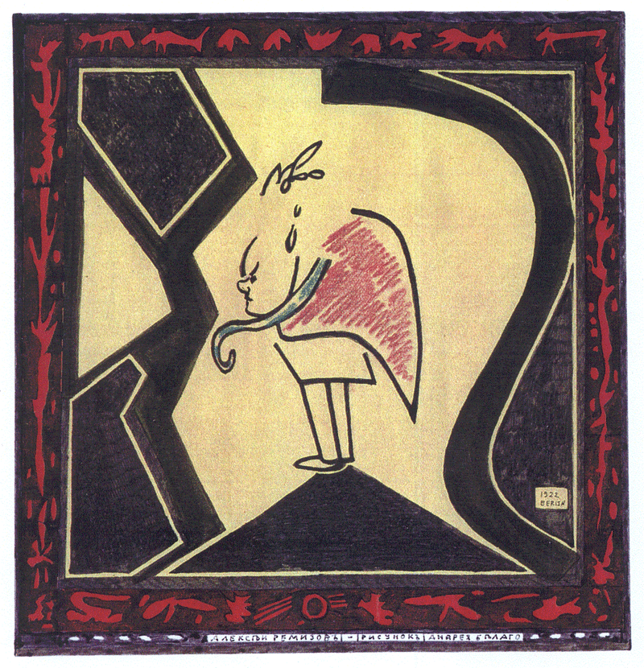

Page index / Bely125
Remizov Sketch of Bely
Remizov Sketch of Bely
The Green Scarf

F.F Ingold in the 1987 Wiener Slavistischer Almanach
, XX, 169-185, published materials from the Library in Basel in the collection
of Fritz (Fedor) Lieb. One of the famous Remizov albums related to Bely contains
this sketch in color wearing the green scarf that is a recurring motif for
Remizov and Bely in Berlin. The original article reproduced the drawing in
black and white and thus the green scarf went unnoticed.